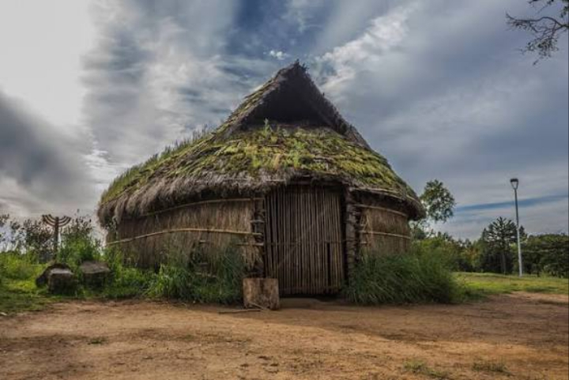

As casas dos mapuches eram chamadas de rucas. Eram feitas com madeira, palha e barro,
em formato oval ou retangular. Tinham um espaço único, sem divisões internas,
com fogo no centro para aquecer e cozinhar.

Curiosidades
O nome “mapuche” significa “povo da terra”.
Eles viviam principalmente no sul do Chile e da Argentina.